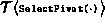
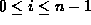

Data Structures and Algorithms
with Object-Oriented Design Patterns in C++
Data Structures and Algorithms
with Object-Oriented Design Patterns in C++
The running time of the recursive DoSort routine (Program  )
is given by
)
is given by
where n is the number of elements in sequence to be sorted,  is the running time of the SelectPivot function, and i is the number of elements which end up to the left of the pivot, .
The running time of DoSort is affected by the SelectPivot
routine in two ways:
First, the value of the pivot chosen affects the sizes of the subsequences.
I.e., the pivot determines the value i in Equation .
Second, the running time of the SelectPivot routine itself,
,
must be taken into account.
Fortunately, if  ,
we can ignore its running time because there is already an O(n) term
in the expression.
,
we can ignore its running time because there is already an O(n) term
in the expression.
In order to solve Equation ,
we assume that  and then drop the
and then drop the  s from the recurrence to get
s from the recurrence to get
Clearly the solution depends on the value of i.
 Copyright © 1997 by Bruno R. Preiss, P.Eng. All rights reserved.
Copyright © 1997 by Bruno R. Preiss, P.Eng. All rights reserved.